| Astoft |
Wells Cathedral Artchitecture Early 13th and early 14th centuries |
||||
|
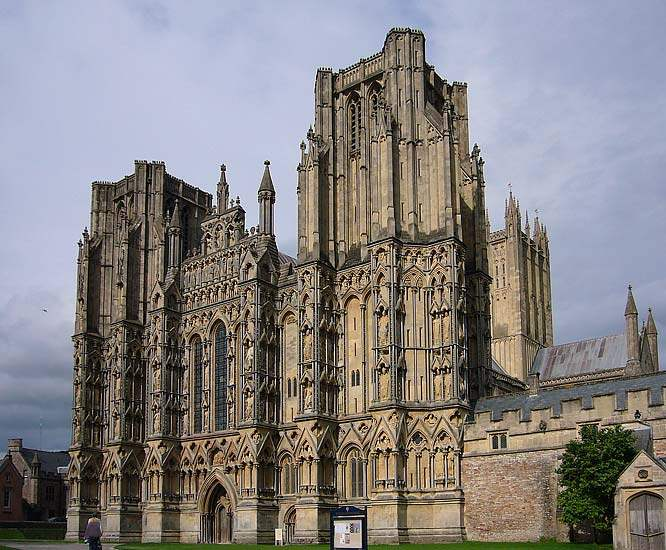 |
||||
| Click on photos to enlarge Notes in italics from North Somerset and Bristol by Nikolaus Pevsner (1958) Yale University Press, New Haven and London. See the book for a much more extensive description. (Separate page for interior) |
||||
|
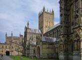 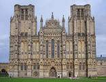 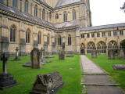 |
||||
| Wells cathedral is the work of two
periods, c.1180-1240 and c.1290-1340. The earlier achieved the
creation of a completely English yet completely Gothic style, the later
- together with Bristol - represents the most original treatment of
space in architecture of which any country at that time was capable. ... The earlier period of 1180-1240 comprises an E end with a one-storeyed straight ambulatory, a straight-ended chancel, crossing with tower over, transepts, nave, and W front, and also the undercroft of the chapter house. The work of c.1285-c.1345 comprises the chapter house, a new E end with an E transept and E Lady Chapel, and the completion and strutting of the crossing tower. ... Later work (late C14 and early C15) is confined to the W towers and the cloisters, a remodelling of the crossing tower, a raising of parapets on the C13 part, and a thorough remodelling of the C13 lancets by introducing simple two-light Perp tracery ... The cathedral is built of Doulting Stone. |
||||
| The photos and descriptions below are primarily in chronological order of construction. | ||||
|
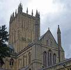 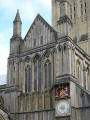 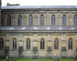 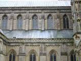 |
||||
| Transepts (early C13,
but the inserted Perpendicular tracery windows are of around
1400). The south transept has broad buttresses ... three stepped lancets ... The gable again has three stepped lancets, the central one wider and blank. On the buttresses stand tall polygonal pinnacles like chimneys, their long shafts with blank arcading, again without any capitals. ... On the north transept the pinnacles on the buttresses are are in three tiers, with blank panelling. ... The window zone consists of three tall arches of even height and two narrow blank bays l. and r. Under the tall arches are three stepped lancets, and above the lower of them paterae of stiff-leaf foliage, the first appearance of another leitmotif of Wells. In the gable finally there are twelve stepped blank arches with continuous moulding. Above the middle pair stiff-leaf in the spandrel. Nave, south and north. The system of the nave (early C13) is again very simple. Broad buttresses below, narrow buttresses above. The lower buttresses have on the N side a stepping of the off-sets - four little steps on the first, three on the second set-off - which Salisbury took over and made a speciality. Corbel-tables on aisle and clerestory. The window tracery again Perp and the parapet raised (both early C14). ... |
||||
|
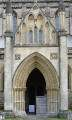 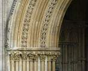 |
||||
| The porch on the north side
treated so sumptuously that we cannot be in any doubt where the
principal entrance to the cathedral was meant to be. The porch has
externally completely plain sides (except for the Perp parapet of the
same design as everywhere else) but a highly enriched facade and
interior. Two flat nook-shafted buttresses flank the entrance. They end
in polygonal pinnacles, again with blank arcading without any capitals.
In the spandrels are two oblong panels with reliefs: a man and a lion,
and the gable of the porch contains a group of six stepped lancets with
continuous moulding. The highest pair in the middle has a short shaft on
a corbel. Below it, inside this pair of blank arches, a group of three
small stepped lancet windows. Four bits of stiff-leaf and minor figure
work above. The conception of all this is developed from the N rather
than the S transept. ... The doorway has eight orders of columns with shaft-rings plus two facing into the interior. The arrangement of the columns follows an odd rhythm. ...The capitals are purely stiff-leaf on the r., but full of figures on the left. (five capitals represent the Martyrdom of King Edmund). The arch mouldings repeat the same rhythm ... It is unquestionably again a paraphrase of the Norman motif of the zigzag ... The inside of the porch is a masterpiece of the E.E. style ... (only glimpsed here). |
||||
|
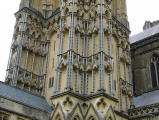 |
||||
| West Front (early C13
except for later towers). My first
reaction to the west facade was that the tops of the towers
had been knocked off, my second thought was that what looked like
scaffolding below had been left there until the towers were completed.
This turned out to be not unlike Pevsner's impression: If you approach it, as it is proposed here, immediately after the N porch, the impression will at once force itself upon you that here is the work of another designer ... Here the spirit is entirely different, different (if I may anticipate) from the whole interior too. The Wells style so far has been one of amplitude, of firmly rounded forms set against nobly sheer surfaces. Now we find something spare instead, harsh uprights and horizontals, angular gables, long Purbeck poles almost, in their detachment from the wall, like steel scaffolding. These are facts. What must now be added is more personal ... The W front of Wells, as it is, seems to me unsatisfactory. This is, it must at once be admitted, primarily due to the unmitigated contrast between the C13 substructure and the late C14 and early C15 towers. ... One should perhaps make an effort to imagine what towers the master who designed the C13 front had in his mind. For there can be no question that he visualized his facade completed. ... To achieve a height commensurate to the existing breadth the towers would have to rise to something unprecedented in Gothic cathedrals, and incidentally something that would have dominated the crossing tower completely. ... (The West Towers are covered in more detail further down the page, keeping to the building chronology). The C13 front is divided into five parts by six mighty buttresses. |
||||
|
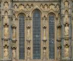 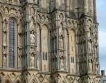 |
||||
| Apart from its architectural aspects the facade of Wells is the richest receptacle of C13 sculpture in England. ... It makes one suspect that the master did not after all dream of crags but of an image screen, a reredos as never reredos had been seen before. | ||||
|
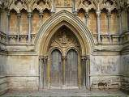 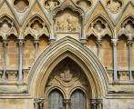 |
||||
| In the tympanum of the middle doorway, in a deeply sunk quatrefoil, the seated Virgin with angels l. and r. The figures are badly damaged, but must have once been amongst the best at Wells. ... Above, little niche with a Coronation of the Virgin ... The two badly mutilated figures also must once have been enjoyable sculpture. The sharp long parallel folds have a good deal of vigour. ... | ||||
|
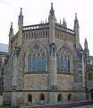 |
||||
| That was the end of the first period
(i.e. the west front around 1240).There is one piece of
transition to the second: the STAIRCASE TO THE CHAPTER HOUSE (seen
in first and second picture above with the chapter house behind it).
The windows here have Geometrical tracery, two circles with sexfoils
below one circle with three small encircled sexfoils. The spandrels are
not yet pierced as in bar tracery, but a little sunk. The buttresses
have the many steps in the set-offs already referred to. The date of
this may be c.1260-c.1275. At Salisbury bar tracery begins to be used
about 1260. At that time the substructure of the chapter house must of
course also have been under construction. However, the CHAPTER HOUSE proper (third picture), as is proved by the details of the tracery of its windows, cannot have been completed until thirty or forty years later ... Ogee arches are frequent in the splendid large windows of the chapter house, but otherwise the tracery here is, if anything, a little closer to C13 traditions. A date of c.1310 would seem fitting. ... The windows are splendidly broad, of four lights, divided into two-plus-two. ... Pointed trefoils and ogee sexfoils in circles ... Buttresses with gables decorated with ball-flower. Big gargoyles. Top frieze of sunk blank arches of two lights with Y-tracery, all in continuous mouldings. Then, a large pierced parapet with diagonally set pointed quatrefoils and diagonally set pinnacles. |
||||
|
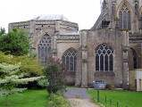 |
||||
| The Lady Chapel (on left in picture)
was begun at an unknown date ... There is reason to assume that it
was complete by 1319. The very original design of the window
tracery looks earlier than that; for it contains no ogee forms. The
motif of the window tracery is arches upon arches - a kind of
pre-reticulation ... The parapet of the Lady Chapel has an openwork
frieze of cusped triangles, and it may well be that this motif was
created here, a motif which was then extended to ... more or less the
whole cathedral, to the chancel of Bristol Cathedral, and in the end to
a whole group of Perp Somerset churches. The retrochoir and east transepts (in right of picture) ... must have gone up at about the same time as the Lady Chapel. However, the window tracery is more varied and unquestionably later than that of the Lady Chapel ... See reticulated window in east transept. |
||||
|
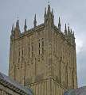 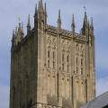 |
||||
| The CROSSING TOWER belongs to the years 1315-22. However, its exterior was altered c.1440. It is a noble design, calm and peaceful, and deeply satisfying from wherever it is seen. The C14 work stands on a short storey left of Jocelyn's time (1206-1242) - with the slim blank arcades with continuous moulding that his master mason liked so much. This low lantern of Jocelyn was raised in 1315-22 by a tall storey with, on each side, three pairs of very elongated lancets. The master of c.1440 then filled in the lancets and decorated them in his own taste. The arrangement now appears of three two-light bell-openings with a transom, repeated below by blank two-light windows without transoms. There the proportions of the whole composition are wonderfully felicitous. ... The buttressing etc. is brilliant. The clasping buttresses of the C14 are continued and end in pinnacles with their attached sub-pinnacles. Little niches for statues in the middle of each pinnacle. (All enlarged in third picture). Between the buttresses are three panels separated again by (much finer) buttresses. They turn diagonal higher up and end in shorter pinnacles above the top parapet. This parapet has the same frieze of pierced cusped triangles as we have already found on the Lady Chapel. All buttresses have at half-height little ogee gables. | ||||
|
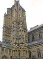 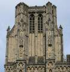 |
||||
| The WEST TOWERS were built later, the S one (first two pictures) by the executors of Bishop Harewell after 1386 (by William Wynford), the N one (second two pictures) by those of Bishop Bubwith after 1424. Both have the same design and are, like the crossing tower, the source of a group of Somerset towers. They lack the fine harmony with the previous work which the crossing tower achieves. They stand bold and bare on the mid-C13 front. Each C13 buttress is continued by one with two thin diagonal buttresses. ... Out of these develop big diagonal buttresses divided into two. ... As compared with the crossing tower, all uprights are stressed much more vigorously. The intended effect is unmitigated verticality. It was balance in the crossing tower. In the W towers it is therefore fatal that no crown whatever was put on. The whole 'slancio' is abruptly cut short, and there is nothing but a low parapet with blank arcading and a silly frill of the smallest battlements. ... | ||||
|
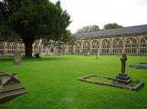 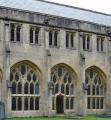 |
||||
| The CLOISTERS on the south side of the nave - east, south and west sections. They were rebuilt in the 15th century. The cloister East Walk was built by the executors of Bishop Bubwith, i.e. c.1425, etc. ... On the upper floor the Library. ... The South Walk was begun by the executors of Bishop Bekynton, died 1465, and continued gradually to c.1508. The West Walk was done for Bekynton. The Singing School is over the W walk. ... Six-light windows with transoms and two-centred heads, divided into three-light sub-arches. Much pretty cusping. ... | ||||
|
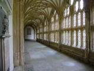 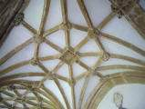 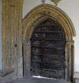 |
||||
| Cloisters interior. The vaults start on solid springers like fan-vaults ... The pattern of the vault is built up with liernes and a square centre with concave sides. | ||||
|
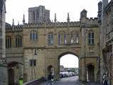 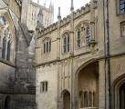 |
||||
| The CHAIN GATE forms a bridge from the top of the chapter-house staircase to the Vicar's Hall. It is said to have been added by Bishop Bekynton in the 15th century. The passage and the bridge have three-light windows with four-centred heads and prettily cusped tracery and battlements and pinnacles. | ||||
|
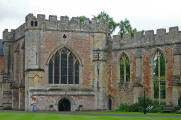 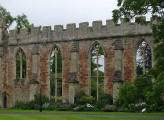 |
||||
| BISHOP'S PALACE. The Bishop's Palace
lies to the S of the cloisters ... The irregular N wing (left hand
of first picture) is partly of the time of Bishop Clark, i.e.
c.1523-35, and partly mid-C19, the splendid chapel and the ruins of an
even more splendid hall (on right) belong to the time of Bishop
Burnell, i.e. c.1280-90, and the centre is partly Bishop Jocelyn's and
partly Bishop Bagot's, i.e. partly c.1230 and partly alas 1846, the time
of the restoration by Ferrey. Ferrey has much to answer for. He added
the porch and the silly dormers of the second storey, he evened out the
other features ... But the buttresses with their characteristically
close-stepped set-offs and the shape of the first-floor windows are
original. ... The Chapel (on right) of Bishop Burnell (1274-92) ... is a building of great beauty, especially internally (regrettably not shown). ... The exterior is of small red stone with white stone dressings. The stair-turret at the SW corner has again the many-stepped set-offs. The W doorway is segmental, nearly semicircular, has Purbeck colonnettes, three cusps, and a hood-mould on head-stops. ... The Hall is in ruins. ... Its date is c.1280. ... Windows with cusped Y-tracery and a sexfoiled circle. The windows are transomed and trefoil-arched below the transoms. All the tracery is remarkably fine and thin. ... |
||||
| Wells Cathedral Interior | ||||
| Home | Architecture Index | Email: astoft.freedom010@passmail.net | |
All photographic images on this website are copyright the website owner 2001 or later unless otherwise stated. Email contact above. Full size originals (3-6 megapixels) are available for approved purposes.